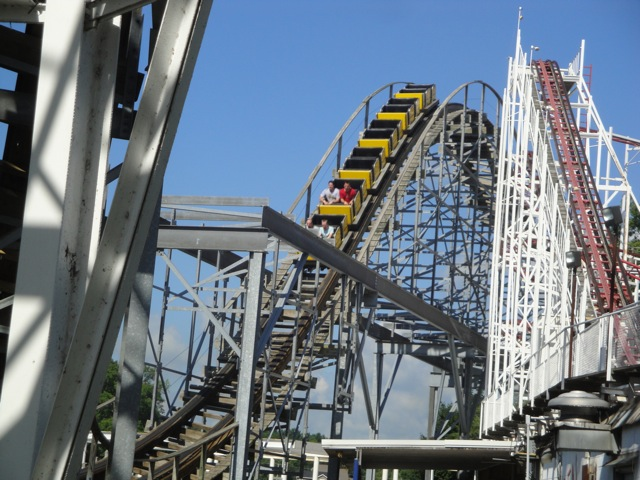

| |
Cornball Express Review

Today, we'll be heading over to Indiana Beach where we'll be reviewing Cornball Express. The smaller of the parks (normal) wooden coasters. But man is this ride by far the best. You first get in, the buzz bar comes down, and you're off! You roll around a turn before climbing up the lifthill. The lift gives you a REALLY nice view of Indiana Beach and Hoosier Hurricane's Lift Hill. Then you reach the top and can't really see the bottom of the drop. If you're in the back, you get some nice whip with a good airtime and laterals combo. Though front or back, you will gain a lot of speed from this first drop. You then go through a funky sort of airtime hill, which isn't really as much of an airtime hill as it is the wooden version of the overbank on Silver Bullet. So that's a lot of fun with its semi sideways floater air. You then rise up into a turnaround and get a small pop of airtime. You get some decent laterals here. And just when you realize you're RIGHT NEXT to the top of Tigg'r Coasters lifthilll, we drop back down and get a little more airtime. Though one thing I noticed is that there are some supports above us at the bottom for no reason. They're not supporting anything, so why are they there? I'm guessing that it was supposed to be a tunnel, but then the park decided against having that there. But what the hell do I know. You then rise up a hill and get another pop of airtime. I know its good and all, but from watching POVs before I rode, I sort of expected it to be a little stronger at this point. But no matter. We're suddenly whipped around a tight turn and head down a drop and get more airtime. Its stronger, but still not too amazing. We then head down a small drop, go through this turn and get some interesting laterals. We don't think anything of the tiny little hill ahead of us, when all of a sudden, BAM!!! You're not in your seat anymore. Holy Crap!! The airtime just got a lot stronger! We then rip through a helix that manages to get pretty crazy with laterals, and yeah. Its a lot of fun. And right after that helix, BAM!!! More really crazy ejector air! A few more laterals and two really crazy pops of ejector air are given to us. And just as its truly getting amazing, its all over. Thats all of Cornball Express. While it is fairly short and it doesn't really get crazy until the end. But on the bright side, it does get crazy, which is more than I can say for many other coasters. I'd totally give this many rides when at Indiana Beach. Its a really really fun wooden coaster with some real craziness at the end.
8/10
Location: Indiana Beach
Opened: 2001
Built by: Custom Coasters
Last Ridden: August 12, 2010
Cornball Express Photos


Home
|